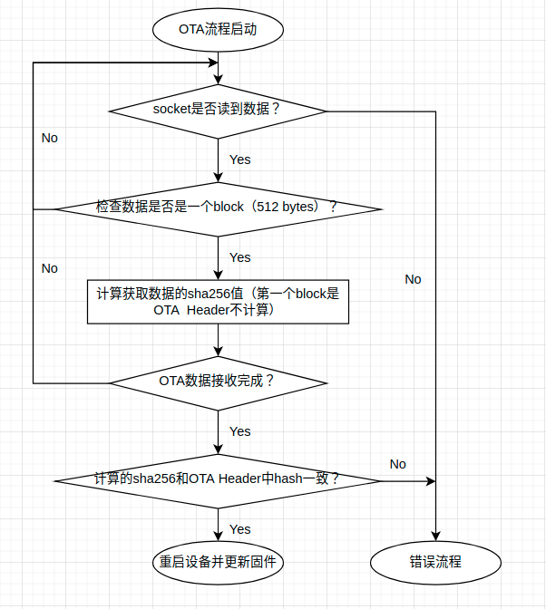
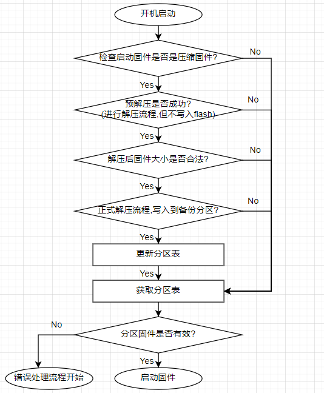
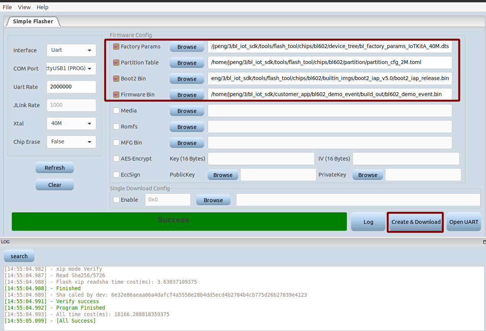
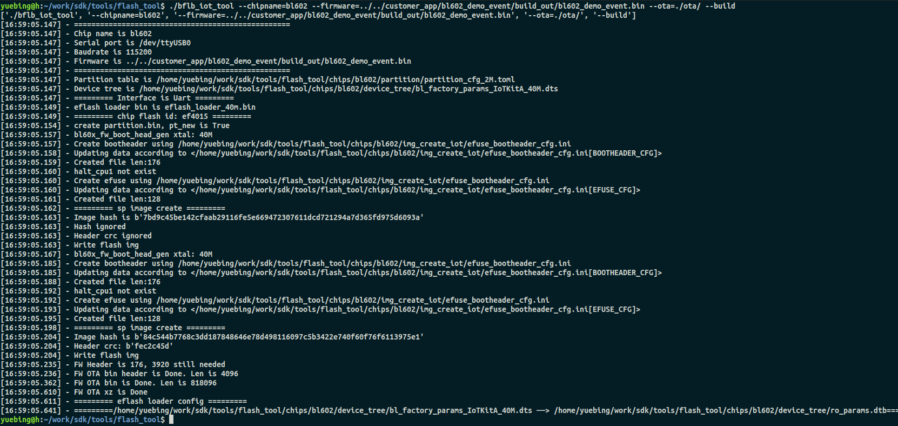
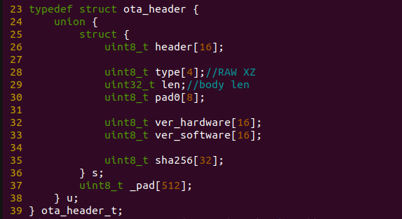

空中升级（OTA）
OTA流程概览
OTA 升级机制可以让设备在固件正常运行时根据接收数据（如通过 Wi-Fi ）进行自我更新。
目前 OTA 采用A/B区pingpong设计，OTA文件有两种类型，压缩和非压缩，其中压缩算法采用xz压缩算法，压缩率约为50%-60%。OTA之前需要check一下分区表的 FW 分区的size0和size1是否满足OTA需求。
一般正常烧录时，烧录工具会将编译生成的bin烧录在 FW 分区起始地址为address0长度为size0的分区里， OTA 接收流程完成后会将OTA文件写在起始地址为address1长度为size1的分区里，然后重启并更新软件，其OTA流程如下：

其开机启动流程如下：

OTA文件的组成
OTA 文件是由Dev Cube烧录工具生成的，按照如下配置，点击Creat&Download按钮即可在 flash_tool/chips/bl602/ota 目录下生成多种 OTA 文件。

同样，还可以使用命令来生成OTA文件，进入 tools/flash_tool 目录，执行 ./bflb_iot_tool --chipname=bl602 --firmware=../../customer_app/bl602_demo_event/build_out/bl602_demo_event.bin --ota=./ota/ --build 命令，会在ota目录下生成 bl602_demo_event.bin 对应的ota文件。

我们也可以指定分区表文件和dts文件，具体请参考 bflb_iot_tool使用方法
下表是生成的 OTA 文件说明：
| OTA文件 | 说明 | 类型 |
|---|---|---|
| FW_OTA.bin | 在编译生成的bin的头部追加4K bytes的Boot2 Head | 非压缩 |
| FW_OTA.bin.hash | 在FW_OTA.bin尾部追加对其计算的32 bytes的Hash值（sha256） | 非压缩 |
| FW_OTA.bin.ota | 在FW_OTA.bin的头部追加512 bytes的OTA Head | 非压缩 |
| FW_OTA.bin.xz | 对FW_OTA.bin进行xz压缩 | 压缩 |
| FW_OTA.bin.xz.hash | 在FW_OTA.bin.xz尾部追加对其计算的32 bytes的Hash值（sha256） | 压缩 |
| FW_OTA.bin.xz.ota | 在FW_OTA.bin.xz头部追加512 bytes的OTA Head | 压缩 |
OTA Head格式简介
OTA Head结构体在components/sys/blota/bl_sys_ota_cli.c中
| 结构体成员 | 说明 |
|---|---|
| uint8_t header[16] | OTA header |
| uint8_t type[4] | OTA文件类型，RAW/XZ |
| uint32_t len | OTA文件内容的长度 |
| uint8_t pad0[8] | 保证内存对齐 |
| uint8_t ver_hardware[16] | 硬件版本信息 |
| uint8_t ver_software[16] | 软件版本信息 |
| uint8_t sha256[32] | 32 bytes的Hash值 |

OTA过程中会打印相关的信息，如：

OTA升级操作
- 在pc上使用nc命令监听端口3333，命令：cat FW_OTA.bin.xz.ota | nc -l 3333
- 编译下载bl602_demo_event工程，上电后输入stack_wifi命令，然后用wifi_sta_connect命令连接ap（与电脑连接同一ap），最后输入ota_tcp <电脑IP>
- 下载完成后，设备会重新启动进入新的固件。